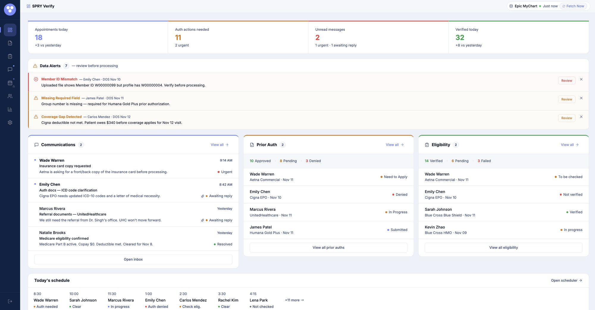
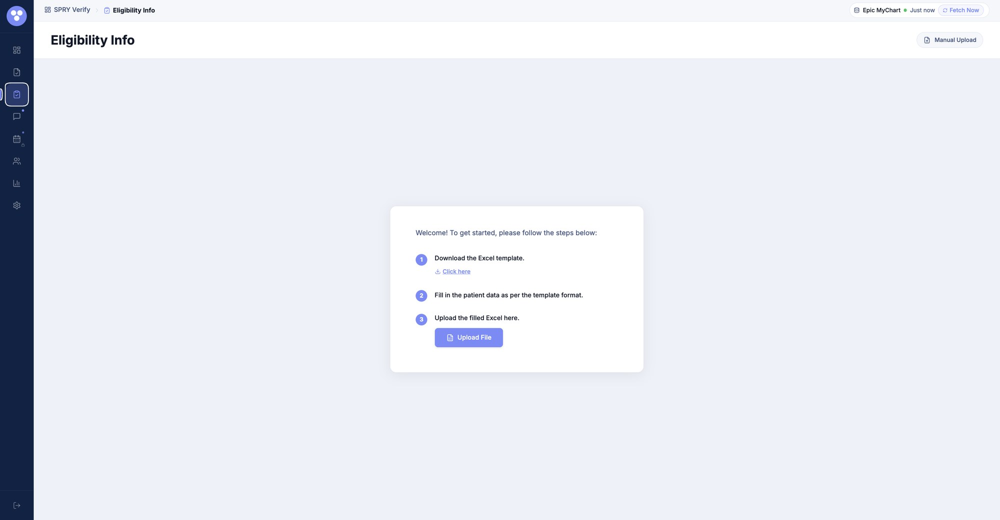
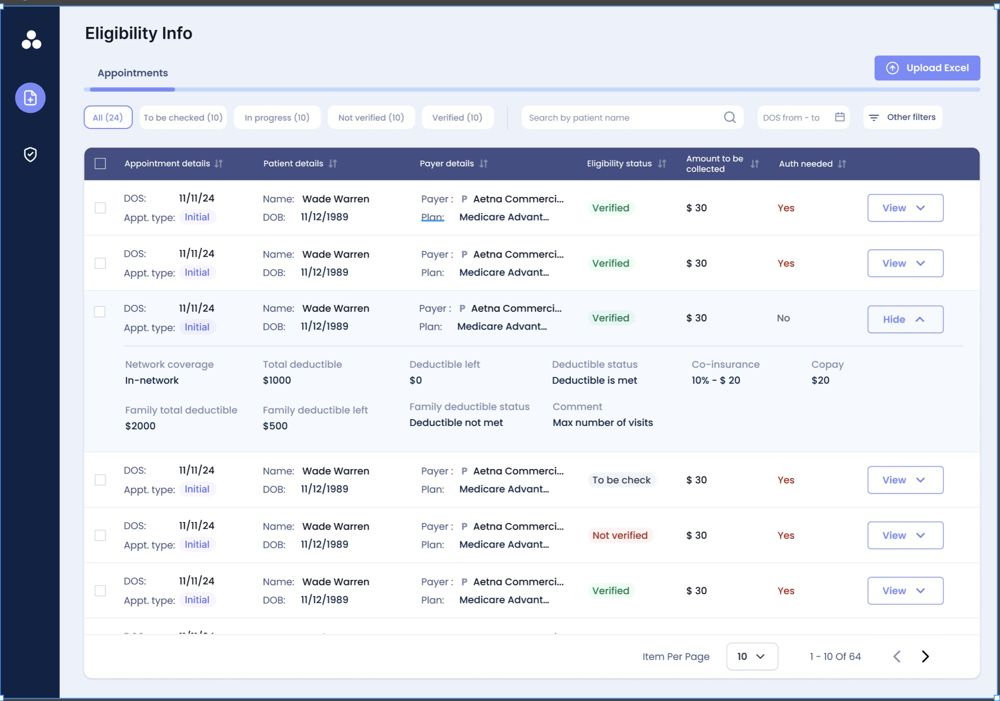
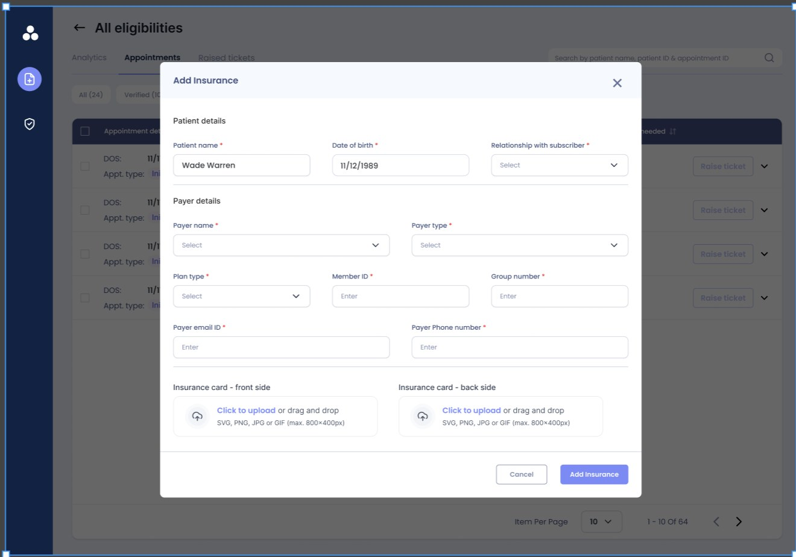
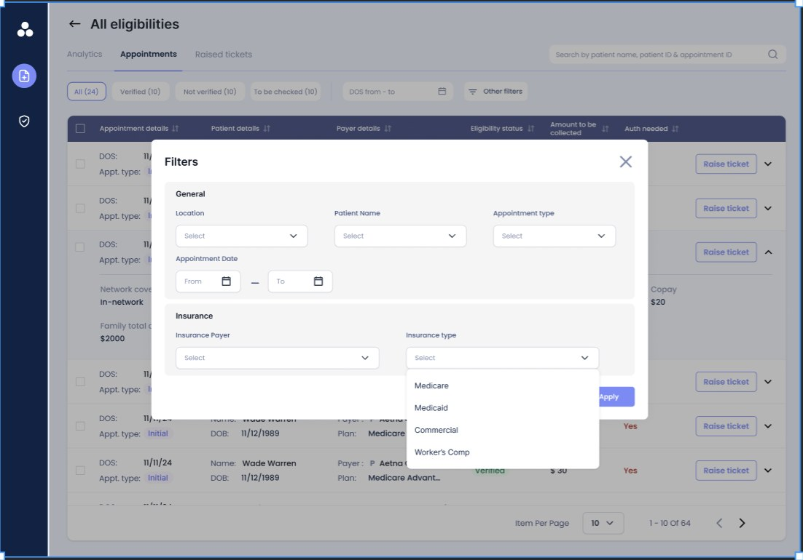
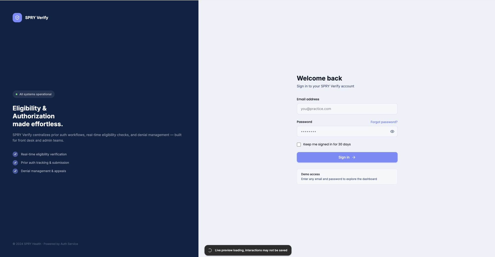

Numbers, then problems, then the work, then the schedule.

- 1Four numbers, four colorsAppointments today, auth actions needed (11, 2 urgent), unread messages, verified today. Blue, amber, red, green carry the meaning.
- 2Data alerts above the workMismatches and gaps are flagged before anyone processes a record, each with a Review button and a dismiss.
- 3Counts before namesEvery panel leads with its status totals, so you know the shape of the queue before you read a row.
- 4Today's scheduleEvery appointment with its verification status: Auth needed, Clear, In progress, Auth denied, Check elig, Not checked.
- 5Sync you can seeEpic MyChart status and a Fetch Now control stay in the corner, always.
The dashboard answered the same question twice.
Over seven iterations the page moved from equal-weight columns to a hierarchy built around the task in front of the operator. Toggle between the two stages.
Four colored numbers, Data Alerts, three panels that lead with counts, and today's schedule. It tells someone where they stand in seconds. Its limit: the three panels read at similar weight.
Need your reply 3
Awaiting payer 5
Prior Auth 14
Eligibility 13
Prior auth and eligibility sit in one Verification Tickets container with a shared count strip. Communications shrink to what needs a reply, and every ticket row carries its age.
What carried across both stages: task-based, not info-display. Counts first, one next step on every element, and a stress test of 50+ urgent messages and 200+ tickets.
From the first upload to a verified list.


The small screens that keep people in the list.



What I would carry forward, and what I would change.
Seven iterations in, here is what the process taught me.
Seven versions is not indecision. Each round was shaped by what operators actually did, until the page was in the right order: numbers, problems, then work.
Stage A scans well but its panels read at similar weight. Stage B fixes that, but eligibility-only users now filter past auth tickets they never touch.
Run the 50+ urgent messages and 200+ tickets stress test from version one, not at the end. Hierarchy retrofitted onto four sample messages is much harder.